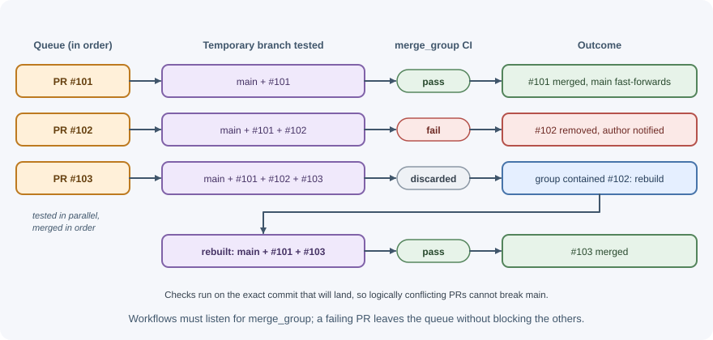

Pull Requests and Code Review¶
A pull request (PR) proposes merging one branch into another and wraps that proposal in a conversation: a diff, automated checks, review comments, approvals, and a record of the decision. On GitHub the pull request is the main quality gate between a developer's branch and the code that gets deployed.
This lesson covers the PR lifecycle, draft PRs, keeping PRs small, review checklists and etiquette, CODEOWNERS, branch protection rules and repository rulesets, required status checks and reviews, linear history, merge queues, stacked PRs, PR templates, linking issues, and auto-merge.
Why it matters¶
Code review catches defects, spreads knowledge of the codebase, and keeps
design consistent; required checks stop broken code from reaching main.
But the same process can become the bottleneck of the whole delivery
pipeline: large PRs wait days for review, reviewers skim instead of
reading, and main still breaks because two individually green PRs
conflict when combined. Good teams design the PR process deliberately:
small changes, fast reviews, the right owners, and automated gates that
the platform enforces rather than relying on memory.
Real-world usage¶
- Google. The paper Modern Code Review: A Case Study at Google analyzes review logs for 9 million reviewed changes, plus interviews and a survey. Google's public code review guidelines say that 100 lines is usually a reasonable size for a change and 1,000 lines is usually too large, that one business day is the maximum time to respond to a review request, and that reviewers should seek continuous improvement rather than perfection, marking optional polish with "Nit:".
- GitHub. In How GitHub uses merge queue to ship hundreds of changes every day, GitHub reports that over 500 engineers merge about 2,500 pull requests a month into its large monorepo through the merge queue, and that the average wait time to ship a change fell by 33% after replacing its older "deploy train" system.
- GitHub Docs. The protected branches and rulesets documentation describe the enforcement options used below, including that multiple rulesets can apply to the same branch and the most restrictive rule wins.
Popular tools and providers: GitHub pull requests, GitLab merge
requests, Bitbucket and Azure DevOps pull requests, Gerrit, the GitHub
CLI (gh), merge queues (GitHub's built-in queue, Mergify, Aviator),
and stacked-PR tools.
How it works¶
The pull request lifecycle¶
- Push a branch and open a PR against the target branch (usually
main). - Optionally open it as a draft: drafts cannot be merged and do not request code owner reviews, but CI runs and teammates can comment.
- Mark it ready for review; GitHub requests reviews from the code owners of the changed files.
- CI runs on the
pull_requestevent and reports status checks. - Reviewers leave comments and submit a review: Comment, Approve, or Request changes.
- The author pushes fixes to the same branch; CI re-runs, and depending on settings, earlier approvals are dismissed.
- When the merge requirements pass, the PR is merged (directly, by auto-merge, or through a merge queue), and the branch is deleted.
![Diagram: a developer pushes a branch, opens a draft PR for early feedback while CI already runs, marks it ready for review which requests code owners; CI on the pull_request event feeds status checks into a merge gate requiring passing checks, approvals including code owners, resolved conversations, and an up-to-date branch or merge queue; a failed check or requested changes leads to pushing fixes, which re-runs CI and may dismiss stale approvals, and returns the PR to review; when the gate passes the PR is squash merged into main, whose own pipeline builds once and deploys.](../pull-request-lifecycle.svg)
The GitHub CLI covers the whole loop from the terminal:
gh pr create --draft --fill --base main # open a draft PR from the current branch
gh pr ready # mark it ready for review
gh pr checks --watch # follow CI status
gh pr checkout 128 # check out someone else's PR locally
gh pr review 128 --approve --body "Looks good; one nit inline."
gh pr merge 128 --squash --delete-branch # merge now (if requirements pass)
gh pr merge 128 --squash --auto # or merge automatically once they pass
Small pull requests¶
Review quality drops as size grows: a reviewer can reason about a 150-line change, but a 2,000-line change gets skimmed. Small PRs are reviewed faster, are easier to revert, conflict less, and keep branches short-lived. Ways to keep them small:
- Split by layer or step: a migration PR, then the API, then the UI.
- Separate refactoring from behavior changes ("move this file" and "change this logic" in different PRs).
- Merge incomplete work behind a feature flag.
- Stack dependent PRs (below) instead of one giant PR.
What reviewers look for¶
A practical review checklist, roughly in order of importance:
| Area | Questions |
|---|---|
| Correctness | Does it do what the PR says? Edge cases, error paths, concurrency, time zones? |
| Design | Is this the right place and the right abstraction? Will it be easy to change? |
| Tests | Do tests cover the behavior and the failure modes, and would they fail if the code were wrong? |
| Security | Input validation, authorization checks, injection, secrets, sensitive data in logs? |
| Data and compatibility | Are migrations backward compatible? Do API changes break existing clients? |
| Operability | Logs, metrics, timeouts, retries, and a safe rollout or flag? |
| Readability | Names, comments that explain why, consistency with the codebase |
| Style | Left to formatters and linters, not humans |
Automate everything mechanical (formatting, linting, type checks, dependency and secret scanning) so human attention goes to design and correctness.
Review etiquette¶
- Authors: write a description that explains what and why, link the issue, point reviewers at the risky parts, review your own diff first, and respond to every comment (fix it, or explain why not).
- Reviewers: respond quickly (within a business day at most), comment on the code rather than the person, explain the reasoning behind a request, distinguish blocking issues from "Nit:" suggestions, and approve when the change improves the codebase even if it is not how you would have written it.
- Both: move long debates to a short call, then record the outcome in the PR.
CODEOWNERS¶
A CODEOWNERS file maps paths to the people or teams responsible for
them. GitHub looks for it in .github/, then the repository root, then
docs/, on the branch the PR targets. When a PR touches owned files, the
owners are requested automatically, and with "require review from Code
Owners" enabled, one of them must approve.
# .github/CODEOWNERS
# Later lines take precedence: the LAST matching pattern wins.
# Owners must have write access to the repository.
* @example/taskflow-maintainers
/src/auth/ @example/security
/src/db/migrations/ @example/data-platform
/.github/workflows/ @example/platform
/.github/CODEOWNERS @example/platform
Patterns follow most .gitignore rules, with exceptions: ! negation
and [ ] character ranges do not work. Owning the CODEOWNERS file
itself and the workflow directory prevents someone from quietly removing
a required reviewer or weakening CI in the same PR.
Branch protection rules and rulesets¶
GitHub offers two ways to enforce rules on branches:
| Branch protection rules | Repository rulesets | |
|---|---|---|
| How many apply to a branch | One (the matching rule) | Many; rules are aggregated, most restrictive wins |
| Targets | Branches | Branches, tags, and (for private/internal repos) pushes by path, size, or extension |
| Visibility | Repository admins | Anyone with read access can see active rulesets |
| Turning off temporarily | Delete or edit the rule | Set enforcement to disabled, keep the definition |
| Bypass | Admins (unless "do not allow bypassing") | Explicit bypass list of roles, teams, or apps |
| Organization-wide | No | Yes, on eligible plans |
Both can apply at once; GitHub enforces the union, taking the most restrictive value of any rule that conflicts. New setups usually prefer rulesets because they layer cleanly (an org-wide baseline plus repository-specific additions) and are visible to everyone.
The rules that matter most for main:
- Require a pull request before merging, with a number of approvals.
- Dismiss stale approvals when new commits are pushed.
- Require review from Code Owners.
- Require approval of the most recent reviewable push, so the person who pushed last cannot be the only approver of their own change.
- Require status checks to pass, optionally requiring the branch to be up to date with the base before merging.
- Require conversation resolution before merging.
- Require linear history: blocks merge commits, allowing only squash or rebase merges.
- Require signed commits, require a merge queue, and require deployments to succeed before merging (for example, to a preview environment).
- Block force pushes and deletions.
Required status checks¶
A status check is a result reported on a commit, usually one per CI job,
named after the job (for example test or CI / test). Marking a check
as required means the PR cannot merge until that check succeeds on
the PR's latest commit. Three details catch teams out:
- Up-to-date branches. Without "require branches to be up to date",
CI may have tested the PR against an old
main. Two PRs can each pass and still breakmainwhen combined. Requiring up-to-date branches fixes this but forces authors to update and re-run CI after every merge, which does not scale; a merge queue does. - Skipped workflows. If a workflow does not run at all because of a
pathsorbranchesfilter, its required check stays "Expected: waiting for status" and the PR is blocked. A job skipped by anif:condition, in contrast, reports success. Design path-filtered CI with that in mind (see pipeline design). - Renamed jobs. Renaming a job changes the check name, so the old required check never reports. Update the rule in the same change.
Merge queues¶
A merge queue keeps main green at high merge rates. Instead of
requiring each PR to be up to date and re-tested by hand, approved PRs
join a queue. For each entry the queue creates a temporary branch
(prefixed gh-readonly-queue/main/) containing the latest main, every
PR ahead of it, and this PR, and runs the required checks on that exact
combination. PRs that pass merge in order; a PR that fails is removed and
the groups behind it are rebuilt without it.

Workflows that provide required checks must listen for the
merge_group event; otherwise the checks never report, and the queue
fails the merge when its status check timeout runs out:
# .github/workflows/ci.yml (trigger section)
on:
pull_request:
merge_group: # required for merge queue checks
Queue settings include the merge method, how many groups build concurrently, minimum and maximum group sizes, a wait time for filling groups, a status check timeout, and whether only non-failing PRs may merge. Availability depends on the plan and repository ownership; check GitHub's merge queue documentation for your account type.
Stacked pull requests¶
When work has dependent steps (model, then API, then UI), you can stack
PRs: PR 2's base branch is PR 1's branch instead of main, so each PR
shows only its own diff. When PR 1 merges and its branch is deleted,
GitHub automatically retargets PR 2 to main. If PR 1 was
squash-merged, PR 2's branch still contains PR 1's original commits;
rebase it with git rebase --onto (see
branching, merging, and rebasing).
Locally, git rebase --update-refs keeps all branches of a stack in sync
when you edit a lower commit, and dedicated stacked-PR tools automate
the rest.
PR templates, linked issues, and auto-merge¶
A pull request template pre-fills the description:
<!-- .github/pull_request_template.md -->
## What and why
## How to test
## Risk and rollout
<!-- Migrations? Feature flag? Anything to watch after deploy? -->
## Checklist
- [ ] Tests added or updated
- [ ] No secrets or personal data in code, logs, or fixtures
- [ ] Database changes are backward compatible
- [ ] Docs and changelog updated if behavior changed
Closes #
Multiple templates can live in .github/PULL_REQUEST_TEMPLATE/, chosen
with a template= query parameter on the PR creation URL.
Linking issues: writing a closing keyword such as Closes #142,
Fixes #142, or Resolves #142 in the PR description links the issue
and closes it when the PR is merged into the default branch.
Auto-merge: once enabled in the repository settings, an author can
mark a PR to merge automatically when all requirements pass
(gh pr merge --auto --squash), so nobody has to wait around for CI to
finish. With a merge queue, the same action adds the PR to the queue.
When to use and when not to use¶
| Practice | Use when | Skip or adapt when |
|---|---|---|
| Required PR reviews | Any shared, deployed codebase | A solo prototype; pair-programmed trunk-based commits (pairing is the review) |
| CODEOWNERS with required owner review | Clear ownership areas (security, data, CI config) | Tiny teams where everyone owns everything |
| Require up-to-date branches | Low merge rate (a few PRs a day) | High merge rate: use a merge queue instead |
| Merge queue | Many PRs per day, slow CI, frequent "main broke" incidents | Low traffic repositories |
| Draft PRs | Early design feedback, CI on unfinished work | Trivial changes |
| Stacked PRs | Large features that split into dependent steps | Independent changes (open separate PRs from main) |
| Linear history | Squash-merge teams that want a simple log | Teams that rely on merge commits for history |
Practical examples¶
A ruleset for main as code¶
Rulesets can be created in the UI or through the REST API, which makes them reviewable and repeatable across repositories:
{
"name": "protect-main",
"target": "branch",
"enforcement": "active",
"conditions": {
"ref_name": { "include": ["~DEFAULT_BRANCH"], "exclude": [] }
},
"bypass_actors": [],
"rules": [
{ "type": "deletion" },
{ "type": "non_fast_forward" },
{ "type": "required_linear_history" },
{
"type": "pull_request",
"parameters": {
"required_approving_review_count": 1,
"dismiss_stale_reviews_on_push": true,
"require_code_owner_review": true,
"require_last_push_approval": true,
"required_review_thread_resolution": true
}
},
{
"type": "required_status_checks",
"parameters": {
"strict_required_status_checks_policy": false,
"required_status_checks": [
{ "context": "lint" },
{ "context": "test" },
{ "context": "build" }
]
}
}
]
}
# Apply it to a repository with the GitHub CLI
gh api --method POST repos/example/taskflow-api/rulesets --input ruleset-main.json
non_fast_forward blocks force pushes, deletion blocks deleting
main, and an empty bypass_actors list means nobody, including admins,
skips the rules. strict_required_status_checks_policy is false here
because a merge queue (added as another rule or in settings) handles
up-to-date testing.
A CI workflow that works with required checks and a merge queue¶
# .github/workflows/ci.yml
name: CI
on:
pull_request:
merge_group:
push:
branches: [main]
permissions:
contents: read
jobs:
lint:
runs-on: ubuntu-latest
steps:
- uses: actions/checkout@v7
- uses: actions/setup-node@v7
with: { node-version-file: .nvmrc, cache: npm }
- run: npm ci
- run: npm run lint
test:
runs-on: ubuntu-latest
steps:
- uses: actions/checkout@v7
- uses: actions/setup-node@v7
with: { node-version-file: .nvmrc, cache: npm }
- run: npm ci
- run: npm test
build:
runs-on: ubuntu-latest
needs: [lint, test]
steps:
- uses: actions/checkout@v7
- uses: actions/setup-node@v7
with: { node-version-file: .nvmrc, cache: npm }
- run: npm ci
- run: npm run build
The job IDs lint, test, and build become the check names listed in
the ruleset. The full TaskFlow API workflow, with a MongoDB service
container, is in GitHub Actions in depth.
Reviewing a PR locally¶
gh pr checkout 131 # fetch the PR branch
git log --oneline origin/main..HEAD # its commits
git diff origin/main...HEAD --stat # files changed since it left main
npm ci && npm test # run it yourself when the change is risky
gh pr review 131 --request-changes --body "Blocking: the new endpoint skips the ownership check (see inline)."
Stacking two PRs¶
git switch -c feat/due-date-model main
# ...commit the schema change...
git push -u origin feat/due-date-model
gh pr create --base main --title "feat(tasks): add dueDate to the task model"
git switch -c feat/due-date-api # built on top of the model branch
# ...commit the API change...
git push -u origin feat/due-date-api
gh pr create --base feat/due-date-model --title "feat(tasks): accept dueDate in the API"
# After the first PR merges (and its branch is deleted), GitHub retargets the second to main.
Best practices¶
- Keep PRs small (roughly a few hundred changed lines at most) and focused on one purpose.
- Write a clear description: what, why, how to test, and the risks.
- Automate formatting, linting, type checks, and scanning; review humans' time for design and correctness.
- Use CODEOWNERS for sensitive paths, including
CODEOWNERSitself and.github/workflows/. - Protect
mainwith rulesets: required PR, approvals, code owners, last-push approval, required checks, no force pushes or deletions, and no bypass. - Use a merge queue once merge volume makes "update branch and re-run CI" painful.
- Respond to reviews within a business day; agree on review expectations as a team.
- Prefer auto-merge over watching CI.
- Link every PR to an issue or ticket for traceability.
In production¶
- A PR is stuck on "Expected: waiting for status to be reported".
Detect: the required check never appears in the PR's checks list.
Cause: the workflow was skipped by a
pathsfilter, the job was renamed, or (with a merge queue) the workflow lacks themerge_grouptrigger. Fix: make the workflow always run and skip work inside jobs withif:(skipped jobs report success), update the required check names, and addmerge_group. mainis red although every PR passed CI. Detect: the failing commit onmainis a merge of two PRs that each passed. Cause: CI tested each PR against an outdatedmain; the changes conflict semantically. Fix: revert, then require up-to-date branches or enable a merge queue.- PRs wait days for review and pile up. Detect: time-to-first-review and PR age metrics climb; PRs over 1,000 lines are common. Cause: large PRs, unclear ownership, review seen as optional work. Fix: size guidelines, CODEOWNERS for routing, a review response target, and splitting work into stacked PRs.
- A change was merged with an unreviewed last-minute commit. Detect: the audit log shows a push after the final approval. Cause: approvals were not dismissed on new pushes. Fix: enable "dismiss stale approvals" and "require approval of the most recent reviewable push".
- An admin merged a failing PR during an incident and broke
production.
Detect: the PR shows "merged without passing required checks" by a
bypass actor. Cause: rules allow admin bypass. Fix: remove bypass
for
main, and create a documented, audited emergency path (for example a separate hotfix ruleset with a required post-incident review). - A contributor removed themselves as a required reviewer by editing
CODEOWNERS. Detect: the diff touches.github/CODEOWNERSand owner reviews disappear from the PR. Cause:CODEOWNERSand workflows were not themselves owned. Fix: assign owners forCODEOWNERSand.github/workflows/, and require code owner review.
Important terminology¶
- Pull request (merge request): A proposal to merge a branch, with a diff, checks, and review.
- Draft PR: A PR marked not ready; it cannot be merged.
- Status check: A pass/fail result reported on a commit by CI or an app.
- Required check: A status check that must succeed before merging.
- Code owner: A person or team responsible for paths listed in
CODEOWNERS. - Branch protection rule: A per-branch set of merge and push restrictions.
- Ruleset: A named, layered set of rules for branches, tags, or pushes, with enforcement status and a bypass list.
- Stale approval: An approval given before newer commits were pushed.
- Linear history: A history without merge commits.
- Merge queue: A system that tests PRs combined with the latest base and the PRs ahead of them before merging them in order.
- Stacked PRs: Dependent PRs where each one targets the previous PR's branch.
- Auto-merge: Merging automatically once all requirements pass.
Common mistakes and misconceptions¶
- Treating approval count as quality; one careful review beats three rubber stamps.
- Huge PRs "because the feature is big"; split the work.
- Reviewing style by hand instead of automating it.
- Making checks required without making sure the workflow always reports them.
- Assuming a green PR means a green
mainwhen branches need not be up to date. - Leaving admin bypass on for
main. - Forgetting
merge_groupwhen enabling the merge queue. - Letting
.github/workflows/andCODEOWNERSchange without owner review.
Revision questions¶
- Walk through a PR from draft to merge, naming each gate.
- What does "require approval of the most recent reviewable push" prevent?
- How do rulesets differ from branch protection rules, and what happens
when both apply to
main? - Why can
mainbreak even though every PR passed CI, and what two settings prevent it? - CI takes 20 minutes. With "require branches to be up to date" and one PR merging at a time, at most how many PRs can land in an 8-hour day? With a merge queue building 5 groups concurrently? (At most 24; up to about 120, ignoring failures and rebuilds.)
- Why should
CODEOWNERSand.github/workflows/have owners? - Why might a required check stay "expected" forever, and how do you fix each cause?
- What are stacked PRs, and what extra step is needed after the lower PR is squash-merged?
Further learning¶
- GitHub Docs: About pull requests
- GitHub Docs: About code owners
- GitHub Docs: About protected branches
- GitHub Docs: About rulesets
- GitHub Docs: Managing a merge queue
- GitHub Docs: Linking a pull request to an issue
- Google Engineering Practices: Code review
- Next: versioning, tags, and releases. Back to the Git and GitHub overview.